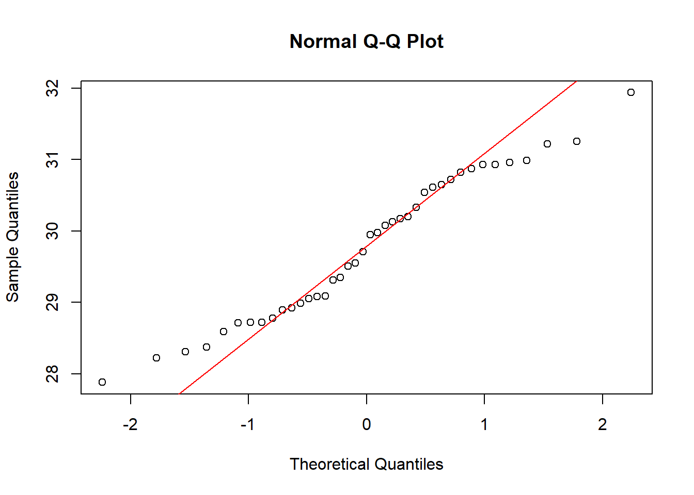
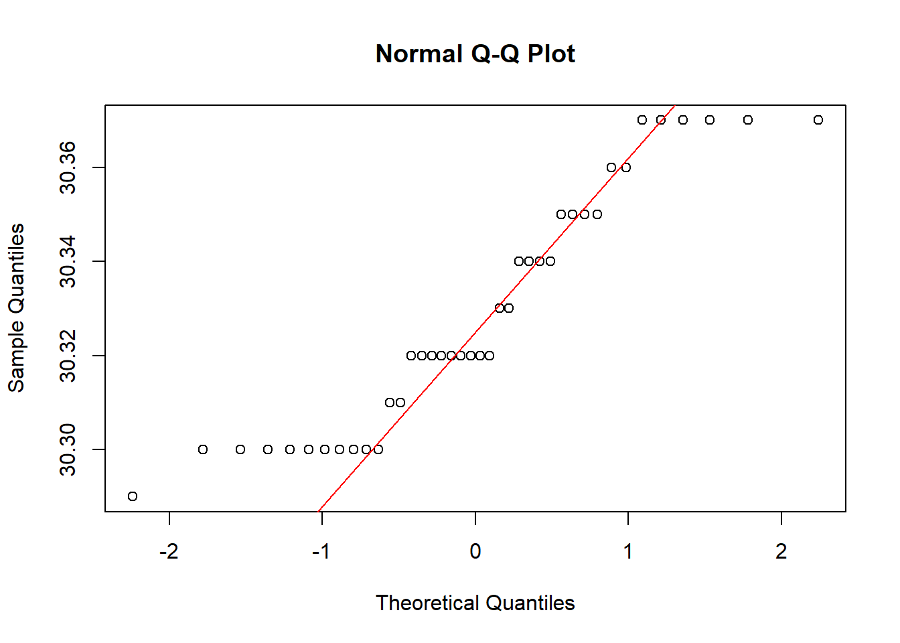
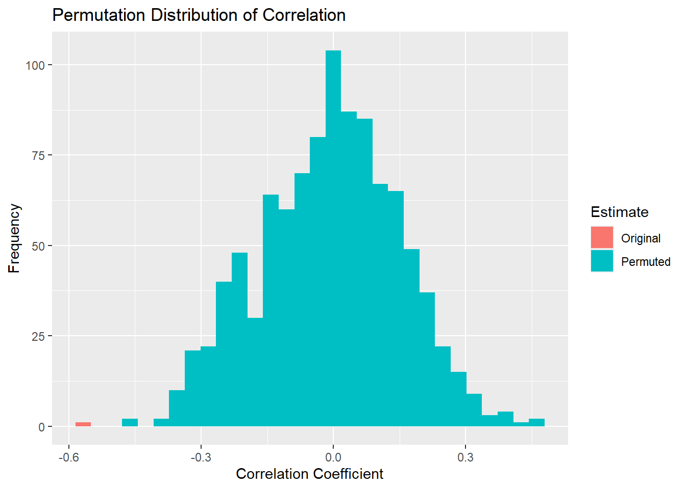

For this exercise, you will use our beloved Rice Rivers Center data to answer the following questions. Create the standard Quarto HTML document and turn in your results by linking to your GitHub repository.
Look up the library GGally; it has a function named ggpairs(). Use that function to plot the atmospheric data from the Rice Rivers Center for the samples collected from 10 February to 15 February.
For those atmospheric data, which pair of variables has the strongest correlation? What is the 95% confidence interval on that correlation coefficient?
Using the first 40 observations in air temperature and barometric pressure from the Rice Center data set, determine if they are individually distributed as normal random variables.
Given your findings in the last question, what kind of correlation statistic would be most appropriate for estimating the correlation between this subset of data?
Look at a qqnorm() plot of the barometric pressure data you used in the previous example. Is there something that “looks” odd with these data? Explain why those data are the way they are.
Using a permutation approach, define the distribution of correlation values between the variables in #3, assuming that the NULL hypothesis is true. Plot these as a histogram and include the observed correlation.
qqnorm( Q3$AirTempF) qqline( Q3$AirTempF, col ="red")

Q3 Barometric Pressure Distribution
qqnorm( Q3$BP_HG) qqline( Q3$BP_HG, col ="red")

Based upon the two distribution graphs, AirTemp appears to be normally distributed while BP doesn’t appear to be normally distributed.
Q4.
Given the results from Q3, it makes sense to run a Shapiro-Wilkes Normality test which will give us an actual statistic to test for normality.
Q4. Air Temperature S-W Test
shapiro.test( Q3$AirTempF)
Shapiro-Wilk normality test
data: Q3$AirTempF
W = 0.96246, p-value = 0.2031
Q4. Barometric Pressure S-W Test
shapiro.test( Q3$BP_HG)
Shapiro-Wilk normality test
data: Q3$BP_HG
W = 0.89733, p-value = 0.001601
According to the S-W test, the results stay the same as Q3. AirTemp has a higher P-Value than 0.05, meaning we will fail to reject the null hypothesis that the data is normal. Barometric pressure has a small p-value, meaning we will reject the null hypothesis (it is not normal).
Q5. Why does the qqnorm plot for barometeric pressure look the way it does?
It looks like this simply because of how the instrument records the data, in increments of 0.02 mmhg, gives it that wonky appearance as a high pressure front rolls through.
for( i in2:1000) { yhat <-sample( y, # this shuffles the data in ysize =length(y), replace =FALSE) model <-cor.test( x, yhat ) df$rho[i] <- model$estimate }
ggplot( df ) +geom_histogram( aes(rho, fill=Estimate ) ) +labs(title ="Permutation Distribution of Correlation", x ="Correlation Coefficient", y ="Frequency")
`stat_bin()` using `bins = 30`. Pick better value with `binwidth`.

Since the original estimate is outside of the permuted distribution, we have sufficient evidence to reject the null hypothesis (P = 0). I.E., there is a correlation here.